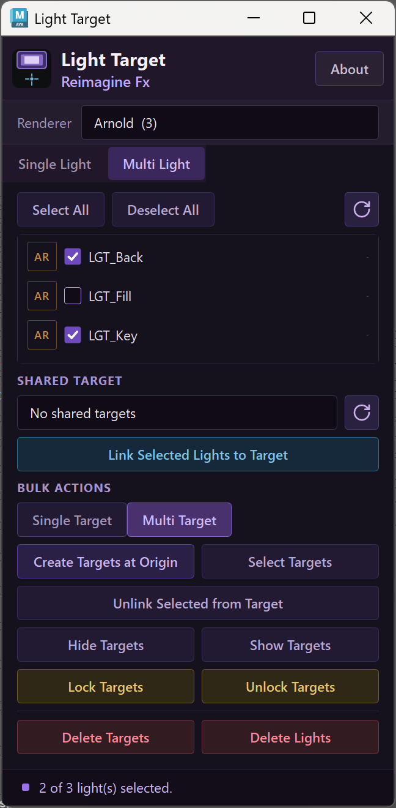
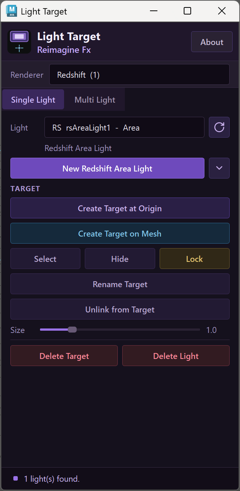

A lighting tool for Autodesk Maya
Light
Target
Aim the light.
Move the target.
Place a target where the light should point. Adjust the target as you work, with single-light and multi-light controls in one Maya panel.
Arnold + Redshift / Maya
From light to target
Give the light
a point to follow.
Use a target locator to control aim. You can place it at the origin or on a mesh, then manage it without digging through the Outliner.
- 01
Choose a light
Select the renderer and a supported scene light, or create a new area light from the panel.
- 02
Place the target
Create a target at world origin or use Create Target on Mesh to choose a point on a surface.
- 03
Adjust the aim
Move the target to redirect the light. Keep selection, visibility and lock controls close.

Multi-light control
One point.
Several lights.
Choose the lights you want to work with. Link them to a shared target, or create a separate target for each light when the setup needs independent aim.
Shared or individual targets
Single Target and Multi Target modes let you choose how the selected lights are controlled.
Keep the rig manageable
Select targets in a batch. Hide them while you judge the shot; show them again when you need to adjust.
Unlink when you're done
Break a target connection from the panel. Target deletion and light deletion have separate controls.
Two renderers, familiar controls
Arnold.
And Redshift.
Choose your renderer in Light Target. The panel shows matching lights and lets you create an area light for that renderer.

Before you install
A few useful details.
Light Target controls light direction inside Maya. It doesn't replace the renderer or change your light's shading settings.
What do I need?
Autodesk Maya and the renderer you intend to use (Arnold or Redshift). Check the current Gumroad listing and included installation guide for version requirements before buying.
Can I use more than one light?
Yes. Multi Light has a checklist for selecting lights, a shared-target selector, and bulk actions for target management.
Can I hide or lock a target?
Yes. The panel has visibility and lock controls. Single Light also has target renaming and a size slider.
Does it support every type of light?
Light Target lists supported aimable lights. A light without a meaningful aim direction, such as a dome light, is not the intended target-based workflow.
Light Target / Reimagine FX
Put the aim
in your hands.
Get Light Target on Gumroad Current pricing and installation details on Gumroad.